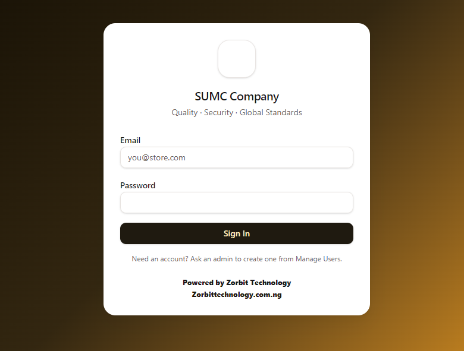

Screen 1 of 9
Secure sign-in
Every person signs in with their own account. Accounts are created by the owner from Manage Users, so only people he approves can open the system, and every action is tied to a name.